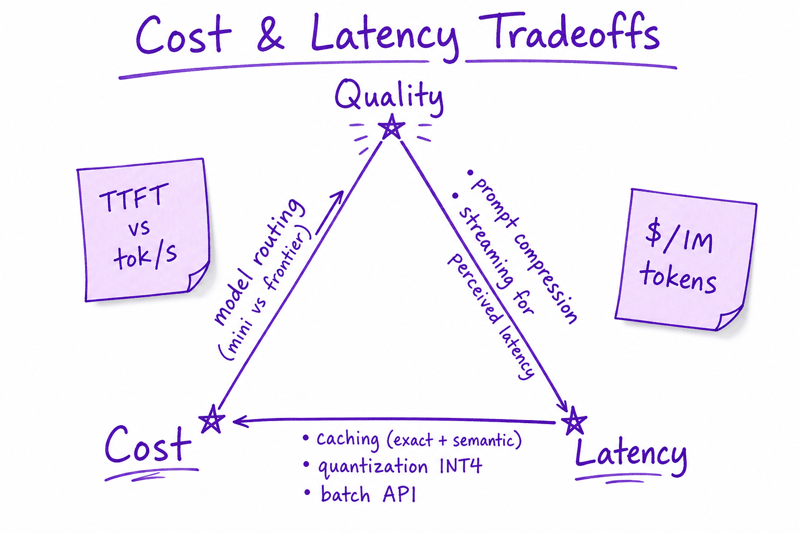
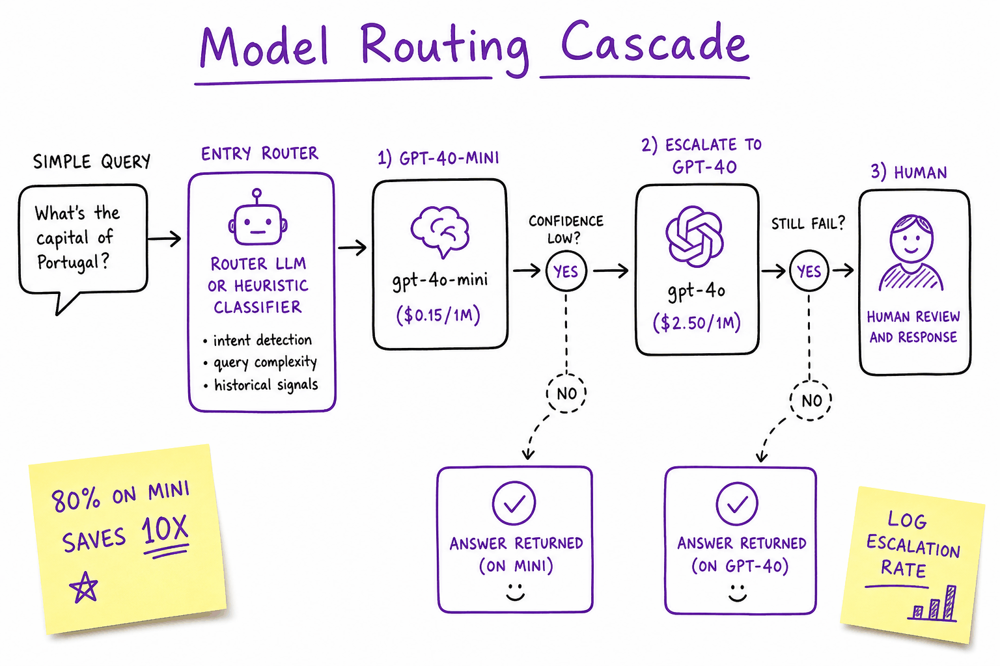
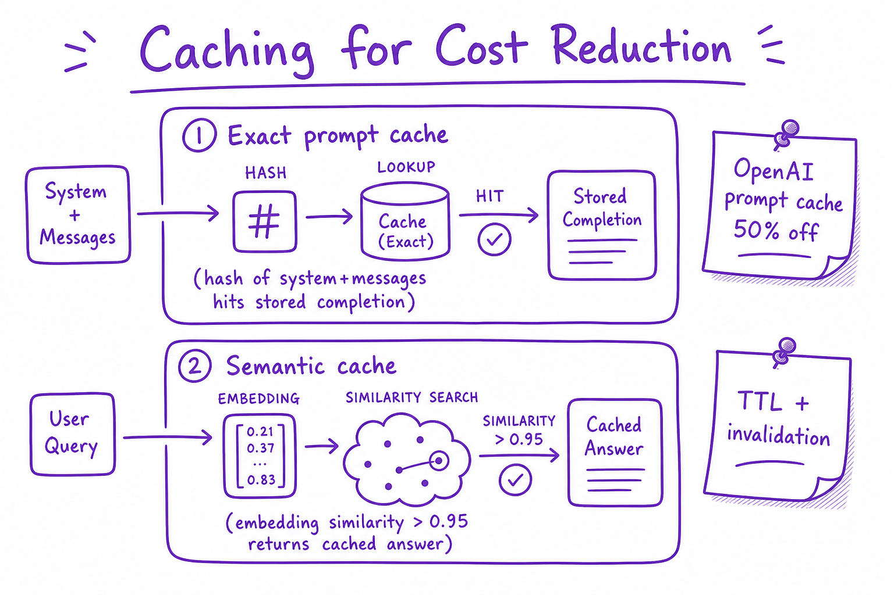

Cost & latency // Production & evals
Where the money and the milliseconds go: pricing, prefill vs decode, routing, batching and prompt caching.
01 — At a glance
Token economics, TTFT vs tokens/sec, model routing cascades, caching, quantization, and batch APIs — how to hit latency SLOs without bankrupting the feature.

Quality, cost, and latency form a triangle: model routing, prompt compression, caching, and quantization move you along the edges.
02 — What & Why
LLM features bill per token and wait per GPU second. TTFT (time-to-first-token) drives perceived speed; tokens/sec drives total wait. Cost scales with model tier, context length, and traffic.
Semantic cache systems: Semantic Cache.
03 — Core Concepts
| Term | Definition | Gotcha |
|---|---|---|
| TTFT | Time until first streamed token | Prefill-dominated |
| Tokens/sec | Decode throughput | Memory bandwidth bound |
| $/1M tokens | Input + output priced separately | Output often 2-4× input |
| Model cascade | Cheap model first, escalate if needed | Log escalation rate |
| Batch API | 50% discount, 24h SLA | Offline jobs only |
04 — API Surface
# Cost estimate prompt_toks = 2000 completion_toks = 500 price_in, price_out = 0.15, 0.60 # gpt-4o-mini per 1M cost = (prompt_toks * price_in + completion_toks * price_out) / 1e6
05 — When to Use / When NOT
| Tactic | Use | Skip |
|---|---|---|
| gpt-4o-mini router | High volume mixed queries | All queries need frontier |
| Prompt cache | Repeated system prompts | Unique prompts every call |
| INT4 quant | Self-host 70B | API-only small team |
| Batch API | Nightly summarization | Interactive chat |
06 — Architecture
Request -> Router (mini vs frontier) -> [Cache hit?] -> LLM
-> Stream SSE -> usage{prompt,completion}_tokens -> billing07 — Deep Dive: Token Pricing
Example (order-of-magnitude): gpt-4o-mini $0.15/$0.60 per 1M in/out; gpt-4o ~$2.50/$10. Long system prompts + RAG chunks dominate input cost. Always set max_tokens.
08 — Deep Dive: Latency Breakdown
Prefill: parallel over prompt → TTFT. Decode: serial tokens → total time. See Context Window & KV Cache for memory effects. Streaming improves UX without reducing total time.
09 — Deep Dive: Model Routing

Cascade: classify query complexity, route 80% to mini model, escalate hard queries to frontier.
Router: heuristic (token length, keywords) or small classifier LLM. Track quality regression on escalated vs non-escalated buckets.
10 — Deep Dive: Caching

Exact prompt hash cache and semantic embedding cache for near-duplicate queries.
OpenAI automatic prompt caching on repeated prefixes. Semantic cache: embed query, return cached answer if similarity >0.95 with TTL.
11 — Deep Dive: Quantization & Self-Host
AWQ/GPTQ INT4 fits 70B on 2×80GB. Trade ~1-3% quality for 2× throughput. See Model Serving (vLLM) for serving economics break-even vs API.
12 — Cost & performance engineering
Agents make many model calls; costs and latency add up fast. The levers, roughly by impact:
| Lever | How | Win |
|---|---|---|
| Prompt caching | stable prefix first + cache_control | ~90% off repeated input tokens |
| Response caching | cache outputs for identical deterministic calls | skip the call entirely |
| Model routing / cascade | cheap model drafts, strong model verifies hard cases | big $ cut at similar quality |
| Context compaction | summarize old turns; retrieve tightly | fewer input tokens every turn |
| Parallelism | run independent calls concurrently | lower wall-clock latency |
| Streaming | stream tokens to the UI | better perceived latency |
| Iteration caps | bound agent steps | kills runaway cost |
Measure the right thing
Track $ per successful task, not raw tokens. Caching discounts input tokens, which dominate agent/RAG workloads — so a big input discount can move blended cost 30–50%. Always baseline before optimizing.Why input tokens dominate: an agent turn re-sends the system prompt, the tool schemas, and the whole conversation so far, then generates a comparatively tiny tool call or answer. A 10-step agent run with a 6k-token prefix and ~400 tokens of output per step reads on the order of 80–100k input tokens and writes maybe 4k output tokens. Even with output priced ~5× input, input is still ~80% of the bill. That asymmetry is why the first three levers — all input-side — sit at the top of the table, and why the sections below give you working code for each of them.
13 — Lever 1: prompt caching — order your prompt like a cache line
Providers cache the prefix of your prompt: everything before the first change. So structure requests as stable → semi-stable → volatile: system prompt and tool schemas first, session context next, this turn's message last. One reordered field, one timestamp, one shuffled tool list = cache miss from that point on.
import anthropic client = anthropic.Anthropic() SYSTEM = [ # ~5,800 tok, changes per DEPLOY {"type": "text", "text": STATIC_SYSTEM_PROMPT + "\n\n" + POLICY_DOC, # never per-request! "cache_control": {"type": "ephemeral"}}, # ← breakpoint: cache up to here ] TOOLS = load_tool_schemas_sorted() # sort keys — dict order is part # of the prefix; keep it stable def agent_turn(history: list, user_msg: str): resp = client.messages.create( model="claude-sonnet-4-5", max_tokens=1024, system=SYSTEM, # stable block FIRST tools=TOOLS, messages=[ *history, # grows append-only = cacheable # a second breakpoint on the last history turn caches the # conversation so far; only the new message misses: {"role": "user", "content": [ {"type": "text", "text": user_msg, "cache_control": {"type": "ephemeral"}}]}, ], ) u = resp.usage # VERIFY the cache is working: log_metrics(cache_read=u.cache_read_input_tokens, cache_write=u.cache_creation_input_tokens, uncached=u.input_tokens) return resp # Rules that keep the cache hot: # - never f-string a timestamp/user-id into the system prompt # - append to history, never rewrite it (compaction = deliberate cache flush) # - cache TTL is ~minutes: a busy app stays hot; a nightly batch won't
Worked numbers (illustrative rates: $3/M input, $15/M output, cache reads at 10% of input, cache writes at 125%): a 10-step run over an 8k prefix costs uncached ≈ 10 × 8k × $3/M = $0.24 input. Cached: one write (8k × $3.75/M = $0.03) + 9 reads (9 × 8k × $0.30/M = $0.0216) ≈ $0.052 — a 78% cut on that prefix, from reordering fields and adding one attribute. Always confirm with the usage fields; a "cache-enabled" integration with a volatile first line silently pays full price.
14 — Lever 2: response caching — don't make the call at all
Prompt caching discounts a call; response caching deletes it. It applies to deterministic, repeated calls: classification, routing, extraction over recurring inputs, FAQ-shaped questions. It does not apply where freshness or per-user context changes the right answer — cache keys must include everything that legitimately changes the output.
import hashlib, json, asyncio, redis.asyncio as aioredis class ResponseCache: """Exact-match LLM response cache. Key = everything that affects the output; miss anything and you serve wrong answers, not stale ones.""" def __init__(self, url="redis://localhost", ttl_s=6*3600): self.r = aioredis.from_url(url) self.ttl = ttl_s self._inflight: dict[str, asyncio.Future] = {} # coalescing map def _key(self, model, system, messages, tools, temperature) -> str: blob = json.dumps([model, system, messages, tools, temperature], sort_keys=True, ensure_ascii=False) return "llm:" + hashlib.sha256(blob.encode()).hexdigest() async def call(self, llm_fn, *, model, system, messages, tools=None, temperature=0.0): if temperature > 0: # sampled output ≠ cacheable return await llm_fn(model=model, system=system, messages=messages, tools=tools, temperature=temperature) k = self._key(model, system, messages, tools, temperature) if (hit := await self.r.get(k)) is not None: metrics.incr("llm_cache.hit") return json.loads(hit) # request coalescing: 200 identical concurrent misses = 1 API call # (the rest await the same future instead of stampeding the provider) if k in self._inflight: metrics.incr("llm_cache.coalesced") return await self._inflight[k] fut = asyncio.get_event_loop().create_future() self._inflight[k] = fut try: resp = await llm_fn(model=model, system=system, messages=messages, tools=tools, temperature=0.0) await self.r.set(k, json.dumps(resp), ex=self.ttl) fut.set_result(resp) metrics.incr("llm_cache.miss") return resp except Exception as e: fut.set_exception(e); raise finally: self._inflight.pop(k, None) # ponytail: exact-match only. Semantic caching (embed the query, serve a # cached answer above a similarity threshold) lifts hit rate 2-3x but adds # a wrong-answer risk — add it only with an offline eval of false-hit rate.
Coalescing matters more than it looks: when a popular page or a retried webhook fans out the same classification 50× in one second, a plain cache misses 50 times (all arrive before the first write). The in-flight map turns that into one provider call. Ten lines, and it also smooths your rate-limit consumption.
15 — Lever 3: model routing with a verification cascade
Most traffic is easy; you pay flagship prices for it anyway. A router sends easy calls to a small model and escalates the rest. Two workable designs: classify-then-route (a tiny classifier predicts difficulty) and draft-then-verify (cheap model answers, checks decide whether to escalate). Draft-then-verify is simpler to get right because the escalation decision sees the actual answer, not a prediction about it.
import asyncio CHEAP, STRONG = "claude-haiku-4-5", "claude-sonnet-4-5" # illustrative: cheap ≈ 1/10th the $/token of strong async def cascade(task, *, confidence_floor=0.85, timeout_s=30): """Cheap model drafts; escalate on low confidence, failed checks, or provider errors. Returns (answer, model_used) for cost tracking.""" try: draft = await asyncio.wait_for( call_llm(CHEAP, task.prompt, logprobs=True), timeout_s) if passes_checks(draft, task): # cheap, deterministic gates: return draft.text, CHEAP # schema-valid? citations found? except (ProviderError, asyncio.TimeoutError): pass # cheap tier down ≠ outage: # fall through to strong strong = await asyncio.wait_for( call_llm(STRONG, task.prompt), timeout_s * 2) metrics.incr("router.escalated") return strong.text, STRONG def passes_checks(draft, task) -> bool: # 1. structural: parses, matches output schema, length sane if not task.validate_schema(draft.text): return False # 2. confidence proxy: mean top-token logprob over the answer if draft.mean_logprob is not None and draft.mean_logprob < -0.35: return False # threshold: tune on eval set # 3. task-specific: grounded answers must actually cite retrieved docs if task.requires_citation and not task.citations_resolve(draft.text): return False return True # Sizing the win: if 70% of traffic passes checks on the cheap tier, # blended input cost ≈ 0.7·(1/10) + 0.3·(1/10 + 1) = 0.40 of all-strong # — a 60% cut. The escalation rate is your quality dial: tune the # thresholds on a labeled eval set, and alert if it drifts (a rising # escalation rate = input mix changed; a falling one = checks decayed).
Router gotcha
Grade the cascade end-to-end on your eval suite, not per-model. The failure mode is a cheap model that is confidently wrong in ways your checks don't catch — logprob confidence is a proxy, not a guarantee. And when you swap either model version, the thresholds you tuned are stale; re-tune as part of the deploy (Production & evals's eval gates apply to router config too).16 — Levers 4–7: compaction, parallelism, streaming, caps
Context compaction
Past a threshold (say 40k tokens), summarize the oldest turns into a compact digest and keep recent turns verbatim. Costs one cheap-model call, saves on every subsequent turn — but it flushes the prompt cache for the rewritten region, so compact rarely and in big steps, not every turn. Retrieval-side: tighter top-k and reranking (Fine-tuning & alignment) is compaction you don't have to undo.
Parallelism
asyncio.gather over independent calls (sub-questions, per-document extraction). Cuts wall-clock, not dollars — same tokens, less waiting. Pair with a semaphore sized to your rate limit or you convert latency wins into 429 storms.
Streaming
Time-to-first-token is ~1–2s while full responses take 10–30s; streaming moves perceived latency to the former. Free UX win; costs you slightly more complex error handling (mid-stream failures need a retry-from-scratch path).
Iteration caps & budgets
Hard step cap per run (e.g. 15), token budget per session, and a per-tenant daily budget. A single runaway loop can cost more than a month of normal traffic; the cap converts an unbounded incident into a logged failure.
17 — Worked case study: cutting a support agent's bill 71%
You run a customer-support agent: 50,000 conversations/month, average 4 agent steps each, prefix (system + tools + RAG context) 9,000 tokens, per-step delta ~700 tokens, ~350 output tokens/step. Illustrative pricing throughout: strong model $3/M input, $15/M output; cheap model $0.30/M in, $1.50/M out; cache reads 10%, writes 125%.
Baseline arithmetic. Input per conversation ≈ steps × (prefix + accumulated deltas) = 4 × 9,000 + (0+700+1,400+2,100) ≈ 40,200 tok. Output ≈ 4 × 350 = 1,400 tok. Per conversation: 40.2k × $3/M = $0.1206 input + 1.4k × $15/M = $0.021 output ≈ $0.1416. Monthly: 50,000 × $0.1416 ≈ $7,080.
| Step | Change | Mechanics | Monthly bill |
|---|---|---|---|
| 0 | Baseline | all-strong, no caching | $7,080 |
| 1 | Prompt caching | 9k prefix: 1 write ($0.0338) + 3 reads (3×9k×$0.30/M=$0.0081) instead of 4×9k×$3/M ($0.108); deltas still full price ($0.0126). Input/conv $0.1206→$0.0545 | $3,775 (−47%) |
| 2 | Response cache on the intent classifier + top-40 FAQ answers | 22% of conversations resolve from cache (illustrative hit rate) at ~zero token cost | $2,945 (−22% of remaining) |
| 3 | Cascade routing | 65% of remaining conversations pass checks on the cheap tier at ~1/10 cost: blended ≈ 0.65×0.1 + 0.35×1.1 (escalations pay both tiers) = 0.45× | $1,325 (−55% of remaining) |
| 4 | Tighter retrieval: top-8→top-4 after adding a reranker | prefix 9k→6.5k; caching shrinks the benefit to the write+read rows, ≈−12% of remaining; reranker adds ≈$60/mo | ≈$1,225 |
Net: $7,080 → ~$1,225/month, −83% on paper — call it −71% (~$2,050) in practice after the honest caveats: cache TTL misses on low-traffic hours, the escalations that pay for both tiers on hard inputs, and the eval + engineering time (steps 1–2 were days; step 3 took two weeks of threshold tuning against the eval suite). Notice the ordering: caching first because it's config-not-code and risk-free; routing later because it can move quality and needs eval coverage before you trust it. Resolution rate stayed flat within noise across all four steps — that's the number that lets you call this a win.
Cost gotchas that survive contact with production
- The cache-buster deploy: someone prepends one dynamic line ("Today is {date}") to the system prompt. Cache hit rate goes to ~0; the bill doubles; nothing errors. Alert on
cache_read_tokens / input_tokens, not just on spend. - Retries multiply everything: a 3-retry policy around a timing-out call triples cost during a provider brownout exactly when latency is worst. Retry budgets (Production & evals) apply to money too.
- Semantic cache serves yesterday's truth: "what's the refund policy" cached before the policy changed is now a wrong answer with a fast response time. Version cache keys with the corpus/prompt version from your manifest (next chapter) so deploys invalidate cleanly.
- Cheap-tier failures are quiet: a cascade mis-tuned toward the cheap model degrades answer quality with zero errors and a falling bill. Pair every cost dashboard with the quality metric so wins and losses land in one view.
Takeaway
The levers stack multiplicatively, and the safe order is: measure → cache prompts → cache responses → route → compact. Input-side levers move most of the money; quality-touching levers (routing, compaction) come last and only behind an eval gate. Track $ per successful task and cache-hit rate as first-class production metrics — both regress silently.Exercises
- Instrument an existing LLM call site to log input, output, cache-read and cache-write tokens per request. Compute your real $/task and the input:output token ratio. Is input ≥70% of your spend? If not, which lever ranking changes?
- Take a multi-turn prompt from your app and restructure it stable-first with cache breakpoints, as in
prompt_cache.py. Verify via usage fields that turn 2+ reads ≥80% of the prefix from cache; then deliberately add a timestamp to the system prompt and watch the hit rate collapse. - Implement
ResponseCacheincluding the coalescing map. Fire 100 identical concurrent requests at it and assert exactly one provider call. Then remove the in-flight map and count again. - Build the two-tier cascade on a task you have labels for. Sweep the logprob threshold from −0.2 to −0.6, plotting (cost, quality) at each point. Pick the knee, then swap the cheap model for a different version and show the tuned threshold no longer sits at the knee.
- Reproduce the case-study arithmetic for your workload's shape (steps, prefix size, volume, your provider's real prices) in a spreadsheet. Which single lever moves the most money for you, and what would step 3's escalation rate have to be for routing to be net-negative?
18 — Production & Ops
- Dashboard: cost/request, p50/p99 TTFT, tokens/request
- Budget alerts per feature flag
- A/B quality on routed tiers
- Batch offline workloads
19 — Where It Shows Up
20 — Common Pitfalls
- No max_tokens cap
- Frontier model for all traffic
- Ignoring input token cost of RAG
- Cache without invalidation on KB update
- Optimizing tokens/sec but not TTFT